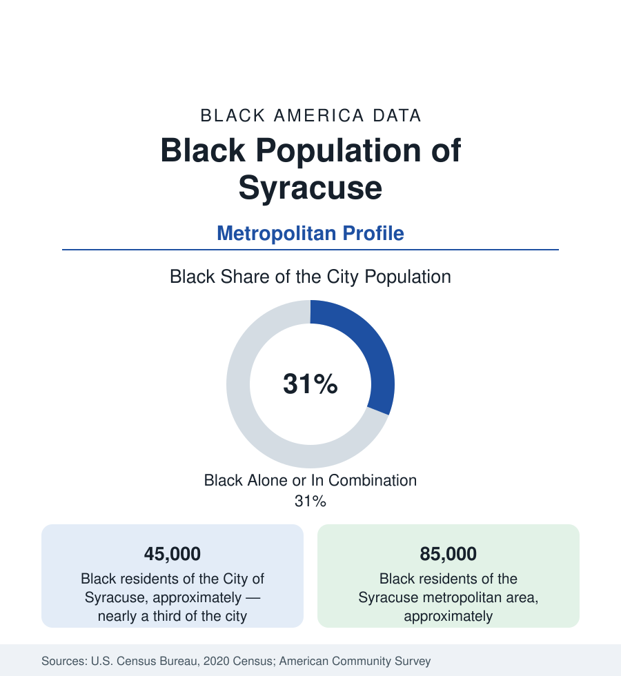

Black Cities
Black Syracuse: The 15th Ward's Ground Beneath the Viaduct
Syracuse holds about 45,000 Black residents in the city — nearly a third — and 85,000 across the metro. The census profile.

Syracuse holds about 45,000 Black residents within the city — Black alone or in combination, nearly a third of its 149,000 people — and about 85,000 across the metropolitan area. Black Syracuse's geography is defined by a single act of destruction and its slow undoing: the 15th Ward, the community's historic heart, was demolished in the 1960s for urban renewal and the Interstate 81 viaduct — and the viaduct is now, in the largest highway-removal project in New York's history, coming down.
The 15th Ward and the South Side
The 15th Ward — the district east of downtown around East Adams and South Townsend — was Syracuse's Black world from the Great Migration: its churches, its businesses, Dunbar Center (the 1918 community institution, still operating), the housing of a community that the salt and railroad economy drew north. The renewal era cleared it for the highway, the hospitals, and the university's expansion — the standard sequence at maximum concentration in a small city — and the population consolidated south: the South Side districts (the South Salina corridor, Brighton, Elmwood, Kirk Park) where Black Syracuse now centers, and the Southwest and Valley neighborhoods. The viaduct's shadow divides the map to this day: the elevated I-81 runs on the 15th Ward's grave, and its replacement by a surface community grid (the state's multi-billion-dollar project, underway in the current data) is explicitly framed in the project documents as reparative infrastructure — the first highway removal in the nation whose justification names the displaced community.
The University's Hill and the City's Split Economy
Syracuse University crowns the hill above the old 15th Ward — the eds economy's engine (with the SUNY medical university beside Pioneer Homes, among the city's oldest public housing) — and the metro's structure follows: the university-medical complex, the school districts, and the logistics of the I-90/I-81 crossroads anchor employment, while the manufacturing that drew the migration generation (Carrier's vast Syracuse works, the typewriter and pottery plants) contracted to remnants. The indicators are the upstate pattern in its most severe small-city form: Syracuse's poverty rate ranks among the nation's highest for cities its size in the Census Bureau's analyses, concentrated in the south and near-west districts in the tract data; the suburbs (DeWitt, Manlius at the affluent pole; Clay and Salina's working suburbs) record the metro's comfort; and the Black middle class distributes between the South Side's homeowner blocks and the suburban increments of DeWitt and Clay. Micron's announced mega-fab in Clay — among the largest semiconductor investments in U.S. history — hangs over the metro's next decade of data as its potential Kodak-in-reverse.
Institutions and the Resettlement Layer
The institutional layer runs complete: Dunbar Center's century of service, the South Side's church geography, the Syracuse NAACP and Urban League chapters, the Onondaga Nation's presence at the metro's southern edge (the Iroquois confederacy's capital — the region's Indigenous data forming their own sovereign file), and one of America's most significant refugee resettlement layers per capita: Syracuse's North Side holds large Bhutanese, Congolese, Somali, Burmese, and Ukrainian communities whose data transform the city's north in ways the census's categories distribute across several tables — the Black African share of it adding a new generation to the South Side's story from the other direction. Syracuse City Schools enroll a majority of students of color with a large refugee-student cohort.
Change and the Estimates
The estimates show a city stabilizing, a metro edging up — the Micron announcement's anticipation in the northern suburbs' land data, the Black population growing slowly in Clay, Salina, and the city's south — and the viaduct project's decade-long construction as the central physical fact. The grid's restoration will reconnect the South Side to downtown for the first time in sixty years; whose land values capture the reconnection is the file the parcel data will grade, with the community land-trust and right-to-return debates of the planning process as its current entries.
Reading the Syracuse Numbers
Syracuse is the highway-removal profile: a community of 45,000 whose heart was paved for an interstate, and whose city is now spending billions to unbuild the decision — the most explicit infrastructure apology in American data. The South Side's tables will record, over the coming decade, whether apology can be measured in outcomes or only in concrete.
More in Black Cities
Black Atlanta: Population, Distribution, and Growth of a Black Metropolis
Metro Atlanta holds more than two million Black residents — roughly one in three, second only to New York. The suburban distribution, migration history, and composition of Black Atlanta in the census data.
Black New York: The Largest Black Population in America
The New York metropolitan area holds about 3.4 million Black residents — more than any metro in the nation — and the city itself about two million. The census profile.
Black Washington: The District and the Metro
The Washington metro holds about 1.6 million Black residents, and the District itself — long a majority-Black city — now records a Black share near 41 percent. The census profile.
Source: U.S. Census Bureau, 2020 Census; American Community Survey; Population Estimates Program.